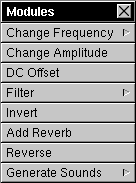

The Modules Menu
After Resound modules load, they add submenus into the Modules menu. A sample Modules menu appears below.


Some modules modify existing sounds; others create new sounds. Use modules at your own risk! Well-written modules can do amazing things to sound, but a badly-written module can bomb Resound.